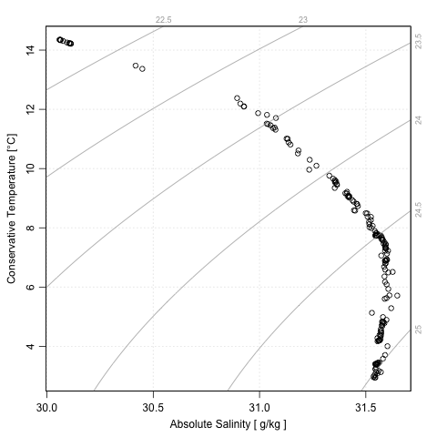

Using gsw alone.
Suppose a CTD instrument lowered in the sea at 188E and 4N measures Practical Salinity to be 35 and in-situ temperature 10C (ITS-90) at pressure 100dbar. Then the following calculates the Absolute Salinity:
{% highlight R %} library(gsw) SA <- gsw_SA_from_SP(SP=35, p=100, longitude=188, latitude=4) {% endhighlight %} which setsSA to 35.16555. This value may be used along with
in-situ temperature and pressure, to calculate the Conservative
temperature:
{% highlight R %}
CT <- gsw_CT_from_t(SA=SA, t=10, p=100)
{% endhighlight %}
which sets CT to 9.978249 degC. Now, density and
surface-referenced potential density can be calculated with
{% highlight R %}
gsw_rho(SA=SA, CT=CT, p=100)
gsw_pot_rho_t_exact(SA=SA, t=10, p=100, p_ref=0)
{% endhighlight %}
yielding 1027.407 kg/m3 and 1026.956 kg/m3, respectively.
This is just a small sampling of what gsw can do; see the Documentation tab for a list of functions provided in this package, and the package documentation and vignette for more information.
Using gsw within oce.
Gsw is integrated deeply into the oce package. It can be selected as an option to most functions. For example, a TS diagram in gsw convention can be created as follows.
{% highlight R %} library(oce) data(ctd) plotTS(ctd, eos="gsw") {% endhighlight %} 